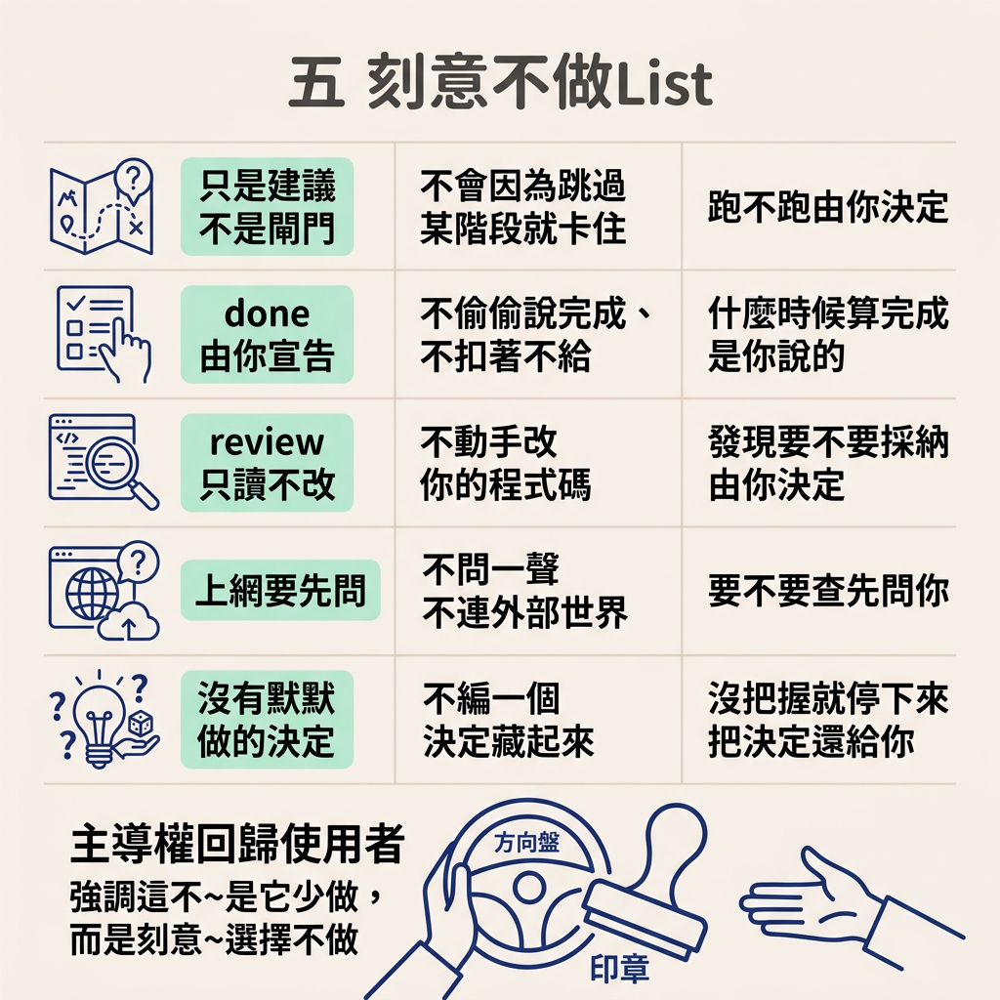
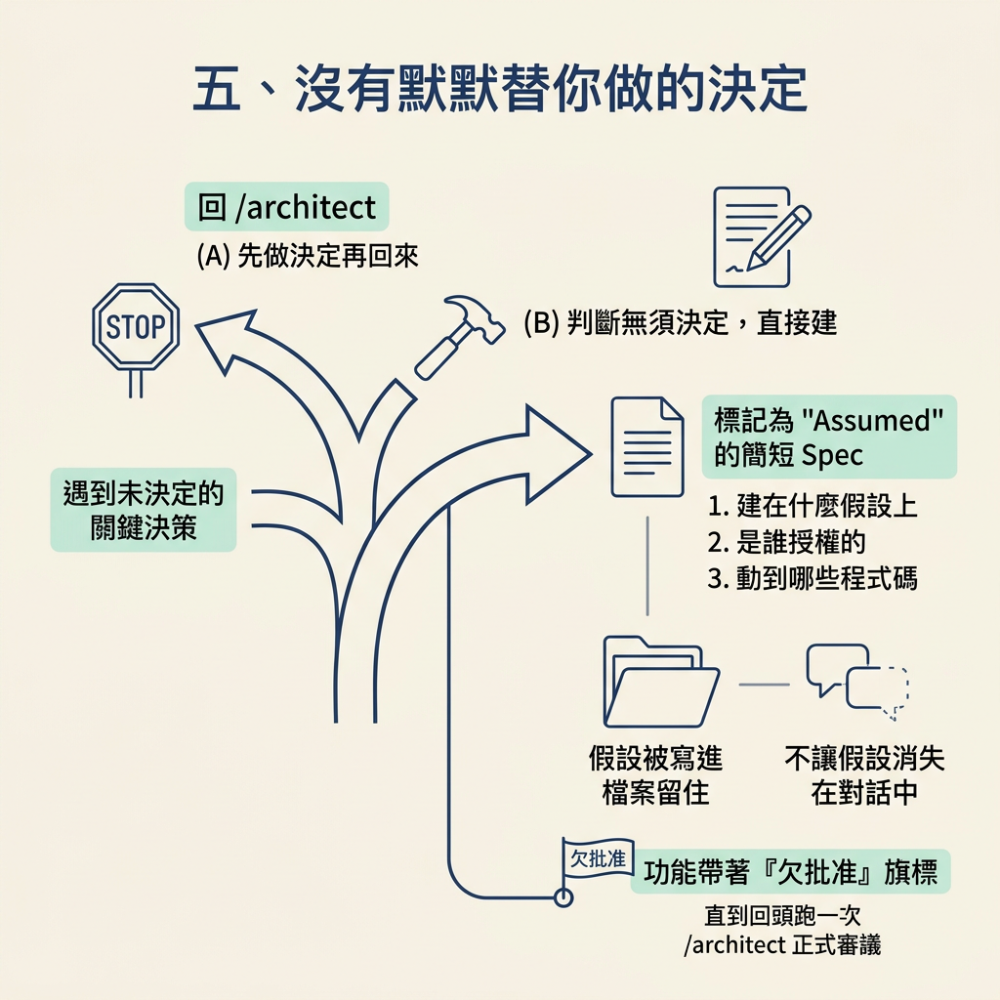
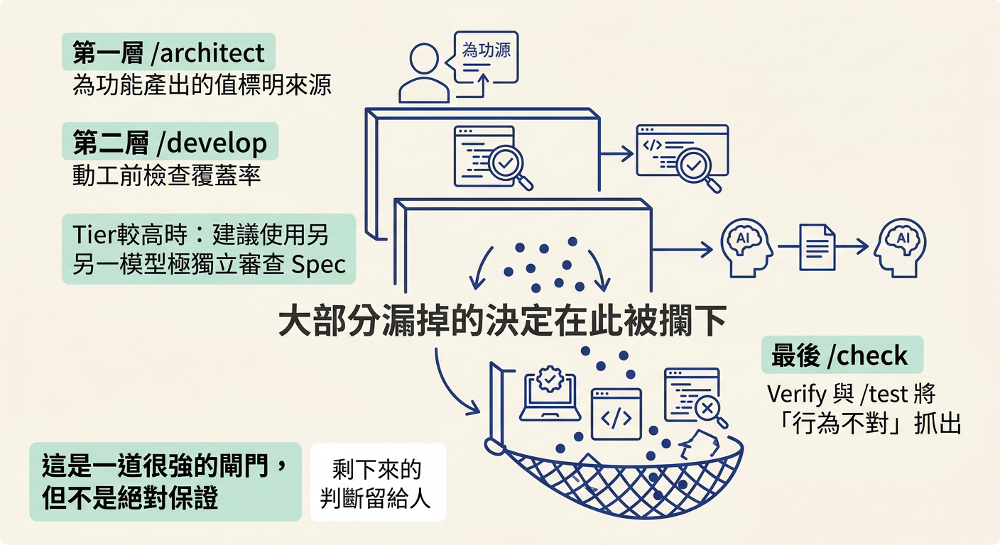

說出這套 workflow 的五個非強制設計——每一步只是建議不是閘門、done 由你宣告、review 只讀不改、上網要先問、沒有默默替你做的決定——並解釋這些設計如何把判斷權留在你手裡。
上一節畫出了一條分工線：skill 帶狀態與流程，人帶判斷。可是把一條線畫在紙上，不等於系統真的照著走。
想像一套「很貼心」的工具：它幫你把功能標成完成、自己上網查資料、順手改掉你覺得不順的地方，然後告訴你「都幫你處理好了」。這種貼心最危險，因為它把判斷偷偷拿走了，你卻以為決定還是自己做的。
所以這一節要做的事很具體：把這套 workflow 的「不做清單」攤開來檢查。看完你會發現，它每一個設計都在做同一件事——刻意不替你決定，把懸在半空的那個判斷留給你。這不是它少做了什麼，而是它刻意選擇不做。
先把五個非強制設計列出來，再逐一看它們怎麼把判斷還給你。
| 設計 | 它「不做」什麼 | 判斷如何留在你手上 |
|---|---|---|
| 只是建議，不是閘門 | 不會因為你跳過某個階段就卡住你 | 每一階段跑不跑，由你決定 |
done 由你宣告 | 不會偷偷說完成，也不會扣著不給 | 什麼時候算完成，是你說的 |
| review 只讀不改 | 不會動手改你的程式碼 | 讀完的發現要不要採納，由你決定 |
| 上網要先問 | 不會不問一聲就連到外部世界 | 要不要查、要不要用，先問過你 |
| 沒有默默做的決定 | 不會編一個決定然後藏起來 | 沒把握就停下來，讓決定回到你面前 |

這套流程裡，/develop 之後的每一個階段——/check 的 verify、/test、/check 的 review、/document——在 tier 裡都只是「建議你跑」，不是「沒跑就不准往下一步」。
tier 是在 /scope 階段選的一個預設嚴謹度，它決定「建議你跑到哪裡就算完成」。四個 tier 的差別大致如下：
Prototype develop 自檢後，建議就可收工 ← 一次性原型、實驗
Alpha develop → check verify ← 低風險功能、內部工具
Beta develop → check verify → test ← 大多數正式產品
GA develop → check verify → test
→ 換模型 check review
→ document ← 高風險、金流、登入、合規
關鍵在最後一句：這些都是「建議的完成點」，不是「鎖死你的軌道」。你隨時可以早一點宣告完成，也可以多跑幾個階段再收工。跳過的階段會被誠實記錄成「跳過」，不會在之後拿來扣你的分。
done 是你的，誰都搶不走workflow 指南在這個設計上寫得毫不含糊：
It will not quietly decide a feature is done, and it will not withholddonefrom you either.doneis always yours to declare.
它不會偷偷替你宣布功能完成，也不會反過來扣著不給你——done 永遠是你自己宣告的。連那個「待批准」的旗標也一樣：一個建立在假設上的功能會一直被標記成「欠批准」，但這個標記不會擋住你宣告完成。系統把「建議你做完這幾步再收」和「你說了算」分得很開。
第二個視角的價值在於它看得和你不一樣，但這也帶來一個誘惑：乾脆讓它順手把問題改掉。這套流程刻意不這麼做：
The review does not edit your code. It reads and reports, and you decide what to change.
review 讀你的程式碼、回報它看到什麼，但一個字都不改。改不改、怎麼改，全部留給你判斷。理由和上一節那條分工線一致：如果它自己動手改，你就失去了「這項發現該不該採納」的判斷權。
當某個決定可能需要外部資源，例如一個第三方服務或一個現成的技能，流程不會自己悶著頭去查。它會先問你要不要讓它去找，只有你點頭才搜尋。這裡的原文是：
It will not reach the internet without your go ahead. It asks before searching for an outside connector or looking anything up, and it records what it used.
它不會沒問一聲就上網，而且它實際用到的外部資源會寫進 spec，方便之後有人回頭追。也就是說，連「要不要向外求助」這個看起來很技術的小決定，也被刻意交還給你。
這一條是整套設計的核心。流程會非常努力地不「替你做一個你還沒做的決定，然後把它藏起來」。如果繼續往下建，就等於要替某個供應商、某個資料形狀或某個設計硬猜一個答案，/develop 會停下來，把你送回 /architect 先做決定。
但你也可能就是想先往前跑。這時它給你三條路：先去做決定再回來、你判斷「這裡沒什麼好決定的」直接建、或是「先建，但把假設記下來」。選了第三條，它不會默默猜，而是當場寫一份標記成 Assumed 的簡短 spec，記下它建在什麼假設上、是誰授權的、動到哪些程式碼。

這份 Assumed spec 的意思就是「記錄了，但還沒想透」。它會讓這個功能一直帶著「欠批准」的旗標，直到你回頭跑一次 /architect，正式審議這個決定。要留意的是，這個旗標同樣不會擋住你宣告 done——它只負責讓假設在檔案裡留著，而不是消失在對話中。
講到這裡，很容易把它想成滴水不漏。原文自己先踩了剎車：這是一道「很強的閘門，不是絕對的保證」——因為沒有任何一段提示詞能做到百分之百。
所以它的設計是「分層攔截」：/architect 會替每個功能要產出的值標明來源，/develop 動工前再檢查一次覆蓋率，tier 較高的情況下還會建議讓另一個模型獨立審一遍 spec。這些能攔下絕大多數漏掉的決定，但攔不掉的，會在後面被 /check 的 verify 與 /test 當成「行為不對」抓出來。
換句話說，這套系統的誠實之處，是它承認自己可能漏，而不是假裝萬無一失。剩下的那一小塊，正是留給你的判斷——這也是為什麼後面還需要那五個放行決定。

這套 workflow 用五個非強制設計把判斷權留在人手裡：每一階段只是建議不是閘門（tier 只決定建議的完成點，跳過的階段誠實記錄）；done永遠由你宣告，它既不偷宣布也不扣著不給；review 只讀你的程式碼、只回報不改；要連外網一定先問你、用到什麼記進 spec；遇到沒把握的決定就停下來，把假設寫成Assumedspec，而不是編一個決定藏起來。它是一道很強的閘門，但不是絕對保證，所以最後仍需 verify 與 test 兜底——而那塊留白，就是你的判斷。
這五個設計，其實都在你該接手的地方刻意停下。但「該接手的地方」到底有哪幾個？下一節把抽象的「判斷」收斂成五個具體動作，也就是這個迴圈真正需要你出手放行的地方。